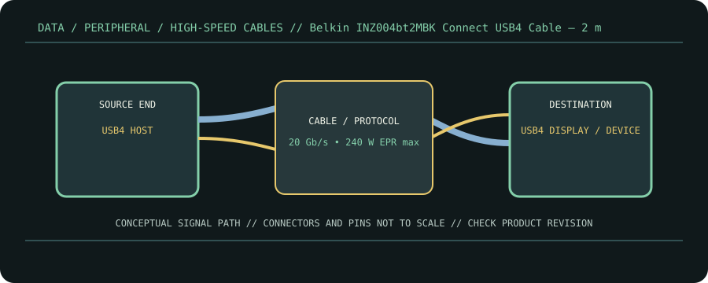

[ CABLE PRODUCT RECORD // BELKIN CONNECT USB4 CABLE, 240 W + 20 GB/S, INZ004BT2MBK ]
Belkin INZ004bt2MBK Connect USB4 Cable — 2 m
USB-C male ↔ USB-C male USB4/EPR cable. This entry documents the named product model, not a universal guarantee for all cables with the same connector.

CLASSIFICATION: Data, peripheral, and high-speed cables. Model-specific facts below are sourced; negotiated operation remains limited by the connected devices.
Interface and capability
| Product / protocol | Belkin Connect USB4 Cable, 240 W + 20 Gb/s, INZ004bt2MBK. USB4 up to 20 Gb/s, USB Power Delivery 3.1 EPR, USB-C DisplayPort Alt Mode where supported. |
|---|---|
| Connector type | USB-C male at both ends; 2 m black INZ004 series SKU. Belkin describes an E-marker and USB-IF certification. |
| Electrical / length limits | 2 m; up to 20 Gb/s, up to 240 W (48 V/5 A), and manufacturer-listed 4K 60 Hz support with compatible devices. |
| Revision-specific compatibility | Works with compatible USB4/USB-C systems and supports backward protocol modes. Display output depends on the host’s USB-C DP Alt Mode implementation and display; power requires EPR-capable source/sink. |
Compatibility & handling
- Model INZ004 is specified at 20 Gb/s; do not mistake USB4 branding for the 40 Gb/s capability of other USB4 products.
- Use the 240 W rating only within USB PD EPR negotiation with capable charger/device. The cable does not supply power autonomously.
- Confirm the exact 2 m SKU; variants in a product family may have different length or performance.
Sources & further reading
- Belkin Support — Connect USB4 Cable, 240 W + 20 Gb/s FAQManufacturer’s exact product-family capability details.
- Belkin Support — Meet the Connect USB4 Cable, 240 W + 20 Gb/sManufacturer overview and intended compatibility.
- USB-IF — USB4 Specification v2.0USB4 protocol reference.